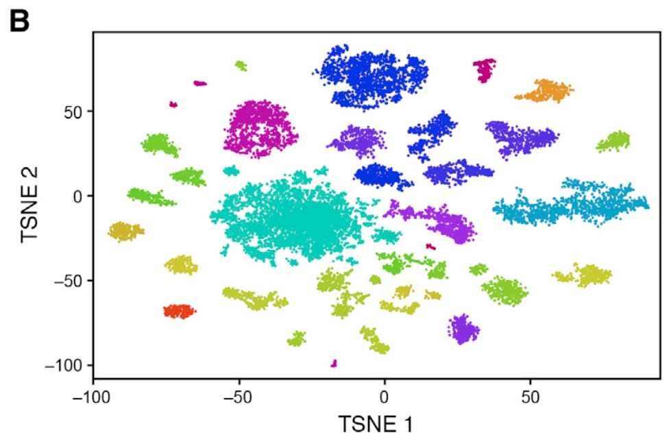
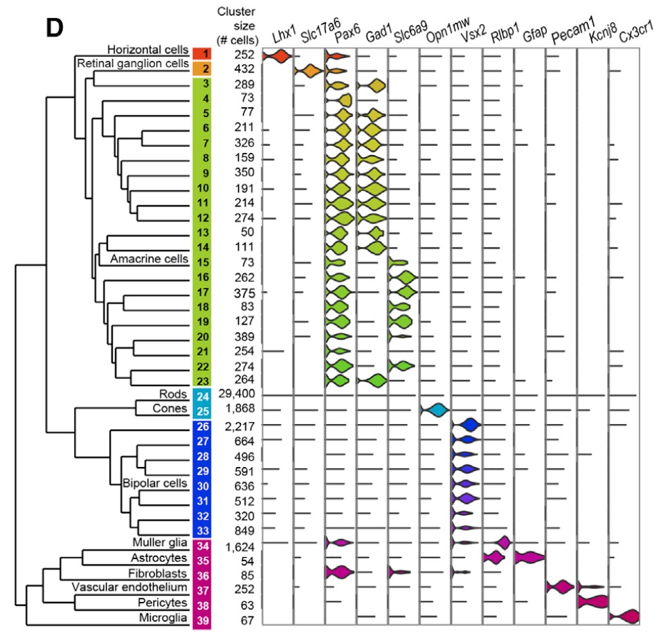

Clustering
Graph-based clustering
First, we discuss graph-based clustering methods for scRNA-Seq data. This is very well explained in the OSCA book chapter 5.2.
As written in the OSCA book: “Popularized by its use in Seurat, graph-based clustering is a flexible and scalable technique for clustering large scRNA-seq datasets. We first build a graph where each node is a cell that is connected to its nearest neighbors in the high-dimensional space. Edges are weighted based on the similarity between the cells involved, with higher weight given to cells that are more closely related. We then apply algorithms to identify “communities” of cells that are more connected to cells in the same community than they are to cells of different communities. Each community represents a cluster that we can use for downstream interpretation.
The major advantage of graph-based clustering lies in its scalability. It only requires a k-nearest neighbor search that can be done in log-linear time on average, in contrast to hierarchical clustering methods with runtimes that are quadratic with respect to the number of cells. Graph construction avoids making strong assumptions about the shape of the clusters or the distribution of cells within each cluster, compared to other methods like k-means (that favor spherical clusters) or Gaussian mixture models (that require normality)."
Several graph-based clustering algorithms are implemented in the scran library. The most global wrapper-function in this package is the clusterCells function. Typically, the input to this function is a SingleCellExperiment object with pre-computed principal components; these are used to take advantage of data compression and denoising. If the default settings are adopted, clusterCells will perform two steps under the hood:
Build a shared nearest neighbors (SNN) graph of observations for downstream community detection. The SNN graph is closely related to the more common KNN graph. For each observation, its k-nearest neighbors are identified (k=10 by default), based on distances between their expression profiles (Euclidean distances are used by default) as observed in PCA space. An edge is drawn between all pairs of observations that share at least one neighbor, weighted by the characteristics of the shared nearest neighbors.
The clusterCells function next internally calls the cluster_walktrap function from the igraph library. Based on the SNN graph from step 1, this function tries to find densely connected subgraphs, also called communities in a graph via random walks. The idea is that short random walks tend to stay in the same community.
# Do not run; clusterCells function with default settings, i.e., building an
# SNN graph and finding clusters with the walktrap algorithm.
library(scran)
nn.clusters <- clusterCells(sce,
use.dimred="PCA")
table(nn.clusters)
The disadvantage of using clusterCells is that the default setting of the second step, the cluster_walktrap function, is slow for large datasets. While it is possible to adjust the different arguments of the clusterCells function, it might be more clear and intuitive to simply break up the process in two steps: building the graph and detecting clusters in that graph. For this second step, we may then adopt a faster algorithm.
Build graph (SNN graph)
# Build a shared nearest-neighbor graph from PCA space
graph <- buildSNNGraph(x = ..., # our SCE object
use.dimred = ...) # A string specifying which existing values in reducedDims(x) should be used.
# alternative: buildKNNGraph()
Detect clusters on the graph
Two popular graph-based clustering algorithm are the leiden and louvain algorithms, both referring to the location of its developers. A common implementation of the louvainalgorithm is to optimize the modularity, effectively attempting to maximize the difference between the observed number of edges in a community and the expected number of such edges.
However, additional evaluations found that modularity optimization using the louvain algorithm is confined to a resolution limit, and in addition may result in communities that are not well connected. The leiden algorithm, instead, guarantees well-connected communities.
set.seed(464688)
# Walktrap community finding algorithm on the SNN graph
# DO NOT RUN -> takes 20 minutes
# cluster_walktrap <- factor(igraph::cluster_walktrap(g)$membership) #20min
# The `cluster_fast_greedy` function tries to find dense subgraph, also called
# communities in graphs via directly optimizing a modularity score
# DO NOT RUN -> takes 4 minutes
# cluster_fastGreedy <- factor(igraph::cluster_fast_greedy(graph)$membership) #4min
# Louvain clustering on the SNN graph
cluster_louvain <- factor(igraph::cluster_louvain(graph)$membership) #8sec
nlevels(cluster_louvain) # 11 clusters
# Leiden clustering on the SNN graph
cluster_leiden <- ... #10sec
nlevels(cluster_leiden) # 1326 different clusters!
# obtain a less overly fine-grained clustering
cluster_leiden2 <- factor(...(graph = ...,
resolution_parameter = 0.01)$membership) #10sec
nlevels(cluster_leiden2) #14 different clusters
# add clusterings to colData
colData(sce)$cluster_louvain <- ...
colData(sce)$cluster_leiden2 <- ...
Comparing clustering strategies
A direct comparison of the Louvain and Leiden clustering results using a table of the cluster labels, shows good agreement.
table(..., ...) # compare Louvain and Leiden2 clustering
Interpret the result of the comparison between the two clustering strategies. Is there a strong correspondence between the strategies?
To make a visualization that gives us very similar information, we may use a heatmap:
#install.packages("pheatmap") # if not yet installed
library(pheatmap)
pheatmap::pheatmap(table(..., ...)) # heatmap to visualize the tabular comparison of above
Again, interpret the result of the comparison between the two clustering strategies.
Alternatively, we may compute a clustering similarity score that captures the agreement between two sets of partitions. The Adjusted Rand Index (ARI) is often used in the literature for this purpose. The ARI is equal to 1 if the two partitions agree perfectly, and it is zero if the two partitions are unrelated. In some cases, the ARI may also be negative if the partitions are much more different than what could be expected by chance.
#install.packages("mclust") # if not yet installed
library(mclust)
mclust::adjustedRandIndex(..., # Louvain
... # Leiden)
Visualization
# Visualization. Add the cluster labels to the previously generated TSNE
# coordinates
plotTSNE(sce,
colour_by="cluster_louvain")
plotTSNE(sce,
colour_by="cluster_leiden2")
K-means clustering
K-means is a clustering algorithm that has been used in many application areas. In R, it can be applied via the kmeans function. Typically, it is applied to a reduced dimensional representation of the expression data (most often PCA). We need to define the number of clusters in advance. Since the results depend on the initialization of the cluster centers, it is typically recommended to run k-means with multiple starting configurations (via the nstart argument). For reproducibility, we also strongly advise to set a seed.
set.seed(123)
# k=10
clust_kmeans_k10 <- kmeans(reducedDim(...), # extract the principal components from the SCE object
centers = ..., # choose k = 10
nstart = ...) # choose 5 different starting configurations
table(clust_kmeans_k10$cluster) # inspect the number of cells in each kmeans cluster
colData(sce)$kmeans10 <- ... # add to colData
plotTSNE(object = ...,
colour_by = ...) # color the observations according to the k-means clustering
# repeat for k=39
We here arbitrarily performed two k-means clustering analyses, once with k=10 and once with k=39 (the number of clusters communicated by the authors). The choice of the number of clusters k can be guided by known biology, however, it is arbitrary at least to some interval.
Hierarchical clustering
From OSCA book chapter 5.4:
"Hierarchical clustering is an old technique that arranges samples into a hierarchy based on their relative similarity to each other. Most implementations do so by joining the most similar samples into a new cluster, then joining similar clusters into larger clusters, and so on, until all samples belong to a single cluster. This process yields a dendrogram that defines clusters with progressively increasing granularity. Variants of hierarchical clustering methods primarily differ in how they choose to perform the agglomerations. For example, complete linkage aims to merge clusters with the smallest maximum distance between their elements, while Ward’s method aims to minimize the increase in within-cluster variance.
In the context of scRNA-seq, the main advantage of hierarchical clustering lies in the production of the dendrogram. This is a rich summary that quantitatively captures the relationships between subpopulations at various resolutions. Cutting the dendrogram at high resolution is also guaranteed to yield clusters that are nested within those obtained at a low-resolution cut; this can be helpful for interpretation."
Indeed, low-resolution clusters can typically be interpreted as super-level cell types, like immune cells, neuron cells or endothelial cells. Higher resolution clusters correspond with a higher biological resolution: immune cell -> lymphocyte -> T-cell -> Th1 cell.
However, note that we can also overcluster the data (splitting a homogenous set of cells in multiple clusters), resulting in spurious cell type identification.
The clusterCells function of the scran library also allows for performing hierarchical clustering. This can be implemented as follows:
# takes 4 minutes
library(bluster)
hclust.sce <- clusterCells(x = sce,
use.dimred = "PCA",
BLUSPARAM = HclustParam(method="ward.D2"))
Equivalently, we may again split the process in two steps:
Compute the pairwise distances between all cells. These are by default Euclidean distances and, in order to reduce data complexity and increase signal to noise, we may perform this on the top (30) PC’s, just like we did when constructing the SNN graph in graph-based clustering. Calculating a dissimilarity matrix is implemented in the dist function.
Perform a hierarchical clustering on the distances from step 1. In an agglomerative procedure, each cell is first assigned to its own cluster and then the algorithm proceeds iteratively, at each stage joining the two most similar clusters, continuing until there is just a single cluster. Implemented in the hclust function.
Note that the hclust function allows for specifying a “method” argument. The differences between the different methods goes beyond the scope of this session, but a brief description is provided in the function help file. In the context of scRNA-seq, we recommend the use of the "ward.D2" method.
distsce <- dist(...) # extract the principal components from the SCE object (runs 1min)
hcl <- hclust(distsce,
method = ...) # runs 3min
plot(hcl,
labels = FALSE) # visualize dendrogram
Next, in order to derive a given set of cluster labels, we need to “cut the tree”, i.e., choose at which resolution we want to report the (cell type) clusters. This can be achieved with the cutree function. As an input, cutree takes the dendrogram from the hclust function and a threshold value for cutting the tree. The latter may be either k, the number of clusters we want to report, or h, the height of the dendrogram at which we want to cut the tree.
# cut to get 10 clusters
clust_hcl_k10 <- cutree(tree = ..., # name of clustering tree
k = ...) # desired number of groups
table(clust_hcl_k10)
# cut to get 39 clusters
...
sce$clust_hcl_k10 <- ... # add to colData
sce$clust_hcl_k39 <- a... # add to colData
# Visualization. Add the cluster labels to the previously generated TSNE
# coordinates
plotTSNE(object = ...,
colour_by = ...) # k=10
plotTSNE(object = ...,
colour_by = ...) # k=39
Clustering in the original paper
When we compare our cluster labels with those from the original paper, we’ll see that the correspondence is not great. As a demonstration, I make a table and a heatmap comparing the low-resolution cluster labels from the paper with our Louvain, Leiden2 and hierarchical clustering (k=10) labels:
table(sce$cluster_lowRes, ...) # compare low resolution clusters of authors to our Louvain clustering
... # compare low resolution clusters of authors to our Leiden2 clustering
... # compare low resolution clusters of authors to our hierarchical (k=10) clustering
# all three comparisons with heatmaps
pheatmap::pheatmap(...)
pheatmap::pheatmap(...)
pheatmap::pheatmap(...)
Also, when we look at the t-SNE from the original publication, we observe clearly distinct clusters:
knitr::include_graphics("macosko_figure_5B.jpeg")

The main reason for this is that the authors of the original paper used quite a different strategy for performing the feature selection and dimension reduction that we have performed in lab session 2.
To demonstrate the pipeline of the original authors, and to make our results more comparable to theirs, We will here mimic their strategy for feature selection and clustering. However, we will do this approximatively! We will take similar steps conceptually, but will remain within the current Bioconductor framework and the range of functions that we have seen in this lecture series.
The authors performed the following steps:
Filtering: The authors first filtered the 49,300-cell dataset to retain only single-cell libraries where at least 900 genes were detected.
Feature selection: The authors first identified the set of genes that were most variable across the selected susbet of cells, after controlling for the relationship between mean expression and variability. To do this, the authors adopted a manual implementation.
-> We will not use the exact same strategy, but the modelGeneVar-getTopHVGs strategy, which is conceptually similar in addressing the mean-variance relationship during feature selection.
Principal component analysis: The authors performed PCA after scaling the data. They next performed a test to determine how many PCs contributed significantly to explaining the variability in the data. Based on this test, they continued the analysis pipeline with the top 32 PCs.
t-SNE: Next, the authors performed a t-SNE on the top 32 PC’s, setting the perplexity parameter of the t-SNE algorithm to 30.
Projection of remaining cells and clustering: Finally, the authors adopted a manually implemented, rather complex strategy to project the remaining cells (where less than 900 different genes were detected) on the t-SNE embedding obtained in step 4. Next, they cluster the cells using a density clustering (DBSCAN algorithm) that was not discussed in this lecture series. Because this 5th step uses techniques beyond the scope of this course, we will simply continue working with the filtered dataset and perform hierarchical clustering. However, we included some code that allows you to do something similar to what the authors did for your reference (note that running
this code requires installing the snifter R package, which requires a working Python and Conda installation).
# code for steps 1-4
library(scater)
library(genefilter)
library(scran)
# Step 1: Downsampling
sce_900 <- sce[,sce$detected > 900]
# Step 2: Feature selection
sce_900 <- logNormCounts(sce_900)
dec_900 <- modelGeneVar(sce_900)
hvg_900 <- getTopHVGs(dec_900,
n = 374) # same number of top features as original paper
# Step 3: PCA
set.seed(1234)
sce_900 <- runPCA(sce_900,
ncomponents = 32, # same number of PCs as original paper
subset_row = hvg_900,
scale=TRUE) # scale the data like in original paper
# Step 4: T-SNE
set.seed(484854)
sce_900 <- runTSNE(sce_900,
dimred = 'PCA',
n_dimred = 32,
perplexity = 30) # same perplexity as original paper
# Step 5 authors (just for your reference): project new cells on t-SNE embedding
#BiocManager::install("snifter")
library(snifter)
tsne1 <- snifter::fitsne(reducedDim(sce_900, type="PCA"))
embedding <- reducedDim(sce[hvg_900,sce$detected>900], type="PCA")
ggplot() +
aes(tsne1[, 1], tsne1[, 2], colour = as.factor(sce[,sce$detected>900]$cluster)) +
geom_point(pch = 19) +
scale_colour_discrete(name = "Cluster") +
labs(x = "t-SNE 1", y = "t-SNE 2") +
theme_bw()
new_coords <- project(tsne1,
new = reducedDim(sce[,sce$detected<=900], type="PCA"),
old = reducedDim(sce[,sce$detected>900], type="PCA"))
ggplot() +
geom_point(
aes(tsne1[, 1], tsne1[, 2],
colour = as.factor(sce[,sce$detected>900]$cluster),
shape = "embedding"
)
) +
geom_point(
aes(new_coords[, 1], new_coords[, 2],
colour = as.factor(sce[,sce$detected<=900]$cluster),
shape = "projection"
)
) +
scale_colour_discrete(name = "Cell type") +
scale_shape_discrete(name = NULL) +
labs(x = "t-SNE 1", y = "t-SNE 2") +
theme_bw()
# Step 5 for us: perform hierarchical clustering
distsce <- dist(...)
hcl <- hclust(tree = ...,
method = ...)
clust_hcl_k10 <- ...
clust_hcl_k39 <- ...
sce_900$clust_hcl_k10 <- ...
sce_900$clust_hcl_k39 <- ...
Visualize our labels and compare with original labels at the low resolution
# visualize our labels
plotTSNE(object = ...,
colour_by = ...,
text_by = ...)
# compare with original labels
plotTSNE(object = sce_900,
colour_by = "cluster_lowRes",
text_by = "cluster_lowRes",
text_size = 3)
Carefully compare the two resulting figures!
# repeat for high resolution labels (2 new t-SNE plots)
...
Carefully compare the two resulting figures!
Overall, we observe a rather strong correspondence between our clusters and those of the authors. Also note that our t-SNE visualization now resembles the t-SNE map of the original authors much more closely:
knitr::include_graphics("./macosko_figure_5B.jpeg")
Cell type annotation
Supervised: using a limited set of known markers
In the publication, the authors aimed to identify the different clusters in the data by using a set of 12 well-known molecular markers; genes for which the expression profile is typically very specific, i.e., highly expressed only in one specific cell type. They used the following markers:
markers <- c("LHX1", "SLC17A6","PAX6","GAD1","SLC6A9","OPN1MW","VSX2",
"RLBP1", "GFAP", "PECAM1", "KCNJ8","CX3CR1")
We will here visualize the expression of these markers in t-SNE space. First, we create a “baseline” figure, displaying each cell in 2D space, colored in black.
library(ggplot2)
gg_hlp_data <- data.frame(x = reducedDim(sce_900, type = "TSNE")[,1],
y = reducedDim(sce_900, type = "TSNE")[,2],
cluster = sce_900$cluster)
gg_base <- ggplot(data = gg_hlp_data[!is.na(sce_900$cluster),],
aes(x = x, y = y,)) +
geom_point(size=0.4) +
theme_bw() +
xlab("TSNE 1") +
ylab("TSNE 2")
gg_base
Next, we obtain the counts of the 12 pre-selected marker genes for all cells.
marker_counts <- assays(sce_900)$counts[markers,]
marker_counts <- as.matrix(t(marker_counts))
Finally, we make one figure for each of the 12 marker genes. The idea is to give each cell that has a non-zero expression of the marker (i.e., for which the marker is expressed) a red coloring.
marker_counts_binary <- marker_counts
marker_counts_binary[which(marker_counts_binary > 0)] <- 1
for (i in seq_along(markers)) {
gg <- ggplot(data = gg_hlp_data[!is.na(sce_900$cluster),],
aes(x = x, y = y)) +
geom_point(aes(color = as.factor(marker_counts_binary[,i])[!is.na(sce_900$cluster)]), size = 0.4) +
scale_color_manual(values=c("black","red")) +
xlab("TSNE 1") +
ylab("TSNE 2") +
ggtitle(colnames(marker_counts_binary)[i]) +
theme_bw() +
theme(legend.title = element_blank())
print(gg)
}
# Visualize our clusters
plotTSNE(sce_900,
colour_by = "clust_hcl_k39",
text_by = "clust_hcl_k39")
From figure 5D, we obtain the marker-cell type relationship:
knitr::include_graphics("macosko_figure_5D.jpeg")

Try to go back and forth between
- the visualization of marker expression on the t-SNE map,
- the visualization of our cluster labels on the t-SNE map, and
- the marker-cell type relationship from figure 5D.
This should allow you to obtain a low-resolution annotation for most of the clusters we have manually obtained ourselves! We give away one of the easiest annotations:
- The LHX1 marker is specific for horizontal cells. As such, our cluster 3 corresponds to horizontal cells.
You can do this for the other markers/clusters (sometimes it will still be ambiguous).
Supervised: Using marker genes detected from this data
Sometimes it will be very difficult to set up a panel of known marker genes that would allow us to distinguish between all cell types in our dataset. For instance, sometimes we may not know in advance which cell types to expect, or we may not have good information on relevant markers (if the studied system is not well known).
An alternative strategy is to identify the genes that drive separation between clusters. These marker genes allow us to assign biological meaning to each cluster based on their functional annotation. This strategy is referred to as marker gene detection.
The most straightforward approach to marker gene detection involves testing for differential expression (DE) between clusters. If a gene is strongly DE between clusters, it is likely to have driven the separation of cells in the dimensionality reduction. The general strategy is to compare each pair of clusters and compute scores quantifying the differences in the expression distributions between clusters. The scores for all pairwise comparisons involving a particular cluster are then consolidated into a single data frame for that cluster. This approach is implemented in the scoreMarkers function of the scran package.
library(scran)
marker.info <- scoreMarkers(x = ..., # the SCE object
groups = ...) # our cluster identifiers
marker.info # one dataframe for each of the 39 clusters
colnames(marker.info[["1"]]) # statistics for cluster 1.
We observe several summary statistics for each gene in the dataframe for cluster 1. We highlight a few:
self.average: the average log-normalized expression of the gene in the target cluster (cluster 1)
other.average: the average log-normalized expression of the gene in all the other clusters (clusters 2-39)
self.detected: the fraction of cells in which the gene was expressed in the target cluster (cluster 1)
other.detected: the fraction of cells in which the gene was expressed in all the other clusters (cluster 2-39)
mean.AUC: From the OSCA book chapter 6.3: “In the context of marker detection, the area under the curve (AUC) quantifies our ability to distinguish between two distributions in a pairwise comparison. The AUC represents the probability that a randomly chosen observation from our cluster of interest is greater than a randomly chosen observation from the other cluster. A value of 1 corresponds to upregulation, where all values of our cluster of interest are greater than any value from the other cluster; a value of 0.5 means that there is no net difference in the location of the distributions; and a value of 0 corresponds to downregulation. The AUC is closely related to the U statistic in the Wilcoxon ranked sum test (a.k.a., Mann-Whitney U-test).” As such, this a very interesting column to use for selecting marker genes.
Based on the mean.AUC statistic, we may now inspect the top10 markers to distinguish between cells of cluster 1 and cells of the other clusters:
chosen <- marker.info[["1"]]
ordered <- chosen[order(chosen$mean.AUC, decreasing=TRUE),]
head(ordered[,c(1:4,10)], n=10) # showing basic stats only, for brevity.
We can also visualize the log-normalized expression of the top10 markers in each cell, stratified on cluster label, using the plotExpression function of the scater package:
library(scater)
plotExpression(bject = ..., # the SCE object,
features = ..., # top 10 features according to the `scoreMarkers` results
x = ..., # our cluster labels
colour_by = ...) # our cluster labels
Based on these results, which markers would you choose to unambiguously distinguish cells from cluster 1 from cells of the other clusters?
Does the name of the 9th marker gene ring any bells?
Semi-supervised using SingleR
A conceptually straightforward annotation approach is to compare our current scRNA-seq dataset with a previously annotated reference dataset. Labels can then be assigned to each cell in the Macosko dataset based on the most similar reference cells, for some definition of “similar”. This is a standard classification challenge that can be tackled by standard machine learning techniques such as random forests and support vector machines. Any published and labeled RNA-seq dataset (bulk or single-cell) can be used as a reference, though its reliability depends greatly on the expertise of the original authors who assigned the labels in the first place and the closer the reference dataset is to the dataset we would like to annotate (e.g., full-length vs UMI-based protocol), the more accurate the annotation will typically be.
In this section, we will perform such label transfer between the annotated reference dataset from Shekhar et al., which also is a scRNA-seq dataset that studied the mouse retina, and the Macosko dataset.
To perform the actual label transfer, will use the SingleR Bioconductor package. For each “test” cell in the Macosko dataset, singleR will:
Compute Spearman correlation between the test cell and each reference cell. To improve signal/noise, only marker genes identified using the reference dataset are used for this.
For each label (cell type), set the score as the (default of) 80% quantile of Spearman correlations.
The prediction is then the label with the highest score.
Before we can use singleR to perform label transfer, we will need to import, explore (brief) and wrangle the reference dataset by Shekhar et al..
Import reference data
The dataset by Shekhar et al. can be conveniently imported using the scRNAseq package.
library(scRNAseq)
(ref.data <- scRNAseq::ShekharRetinaData(ensembl = TRUE))
Process reference data
- Remove unlabeled cells
sum(is.na(ref.data$CLUSTER))
ref.data <- ref.data[,-which(is.na(ref.data$CLUSTER))]
- Remove doublets/contaminant cells
The original authors already performed quality control; we have cells with cluster label “Doublets/Contaminants”. Let’s remove those:
sum(ref.data$CLUSTER == ...)
ref.data <- ...
- Make lower resolution cell type levels (for easier interpretation)
ref.data$CLUSTER_lowRes <- fct_recode(ref.data$CLUSTER,
"Amacrine_cells" = "AC (Amacrine cell)",
"Bipolar_cells" = "BC1A",
"Bipolar_cells" = "BC1B",
"Bipolar_cells" = "BC2",
"Bipolar_cells" = "BC3A",
"Bipolar_cells" = "BC3B",
"Bipolar_cells" = "BC4",
"Bipolar_cells" = "BC5A (Cone Bipolar cell 5A)",
"Bipolar_cells" = "BC5B",
"Bipolar_cells" = "BC5C",
"Bipolar_cells" = "BC5D",
"Bipolar_cells" = "BC6",
"Bipolar_cells" = "BC7 (Cone Bipolar cell 7)",
"Bipolar_cells" = "BC8/9 (mixture of BC8 and BC9)",
"Cones" = "Cone Photoreceptors",
"Muller_glia" = "MG (Mueller Glia)",
"Rod_Bipolar_cell" = "RBC (Rod Bipolar cell)",
"Rod Photoreceptors" = "Rod Photoreceptors")
- Remove lowly expressed genes
keep <- rowSums(assays(ref.data)$counts > 0) > 10
table(keep)
ref.data <- ref.data[keep,]
- Obtain same gene ID format as in target data
To avoid problems with different version of gene symbols, it is good practice do work with unambiguous gene identifiers like those of ENSEMBL instead.
rownames(sce_900) <- rowData(sce_900)$ensembl_gene_id # use ENSEMBL identifiers instead
sum(rownames(sce_900) %in% rownames(ref.data))
- Compute
logNormCounts
library(scuttle)
ref.data <- logNormCounts(...)
SingleR at low reference resolution
#BiocManager::install("SingleR")
library(SingleR)
# runs 2min 30sec for me
pred.lowRes <- SingleR(test = ..., # our dataset
ref = ..., # the reference dataset
labels = ..., # vector of known labels for all cells in ref
de.method = "wilcox") # most suitable method for sparse (droplet) data
table(pred.lowRes$labels)
Using the SingleR classifier that was trained on the reference dataset by Shekhar et al., we have labeled 2731 cells from the Macosko dataset as amacrine cells, 1528 cells as bipolar cells, and so on. Again note that we predicted a label for each cell in the Macosko dataset based its similarity (in gene expression) with labeled cells from the Shekhar dataset.
Most importantly, we want to compare our predicted cell labels with the labels that were obtained by Macokso et al., which we could consider to be ground truth labels if we assume that the authors succeeded in their large effort of annotating their cell clusters for their publication.
tab <- table(..., ...) # the original low-resolution labels versus our predicted low-resolution labels
tab
Inspect the results.
Before we dive deeper into this, we may visualize our result using a heatmap:
pheatmap::pheatmap(tab / rowSums(tab))
Inspect the results.
One other visualization strategy is implemented in the plotScoreHeatmap of the SingleR package. Remember, the SingleR classifier assigns each target cell to a cell type label with a certain probability. The plotScoreHeatmap function then allows you to plot, for each cell (columns) the assignment score (which can be thought of as a probability) of that cell belonging to each of the reference label categories (rows).
gg <- plotScoreHeatmap(pred.lowRes[1:20,])
gg
Inspect the results.
Finally, we can use these assignment score to filter out cells that could not be unambiguously assigned to one cell type, i.e., only report those cells that we were able to reliably assign:
summary(is.na(pred.lowRes$pruned.labels))
range(rowMaxs(pred.lowRes$scores)) # all assignments
range(rowMaxs(pred.lowRes$scores[!is.na(pred.lowRes$pruned.labels),])) # reliable assignments
table(sce_900$cluster_lowRes[!is.na(pred.lowRes$pruned.labels)],
pred.lowRes$labels[!is.na(pred.lowRes$pruned.labels)])
We will interpret the concordance between the predicted and the original labels on this subset. We observe a strong correspondence between the predicted labels and the labels from Macokso et al. We can read this table as follows:
- Almost all amacrine cells of the Macosko dataset are correctly predicted as amacrine cells (2036/(2036+7+1+41+1) ±= 98% correctly assigned).
Try to interpret the results for the other cell types.
We can now also visualize the predicted labels and the original labels on our t-SNE.
sce_900$SingleR_lowRes <- pred.lowRes$labels
# our low resolution labels based on reference
plotTSNE(...,
colour_by = ...,
text_by = ...,
text_size = ...)
# low resolution labels of the authors
plotTSNE(...,
colour_by = ...,
text_by = ...,
text_size = ...)
Interpret the visualizations.
Altogether, label-transfer was quite successful, and we would have been able to very quickly get high-quality results using this very user-friendly and fast approach implemented in the SingleR package.
Addendum: SingleR at high reference resolution
For the sake of completeness, we may also perform label transfer with SingleR using the more fine-grained labels from the reference dataset.
